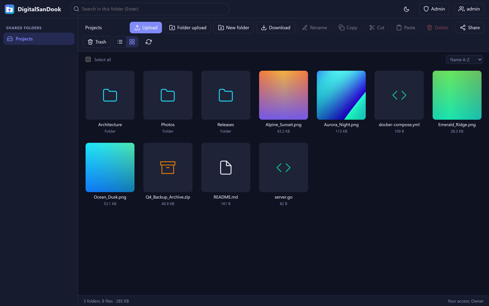

Your Private File Cloud.
One ~7 MB Binary.
Share any folder in seconds. Browse, stream, edit, and transfer files at wire speed with TOTP 2FA, kernel-jailed storage, resumable chunked uploads, file-drop links, and a built-in Cloudflare Tunnel — no database, no runtime, no bloat.

Engineered to Be the Securest & Fastest
Every layer is designed from first principles — minimal attack surface, maximum throughput, zero setup friction.
Kernel-Enforced Folder Jail
Every file operation runs through Go's os.Root (RESOLVE_BENEATH). Symlinks, junctions, and .. traversals are blocked in the kernel — even under race conditions.
Built-In TOTP 2FA & HMAC Audit
Zero-dependency RFC 6238 authenticator 2FA with replay protection and 8 recovery codes. Every security event is HMAC-SHA256 hash-chained so log tampering is immediately detectable.
Wire-Speed Resumable Transfers
Parallel resumable chunked uploads with adaptive 8–64 MiB chunks, sparse NTFS allocation, zero-copy sendfile downloads, streamed ZIP archives, and enlarged HTTP/2 windows.
Smart Sharing & File-Drop
Chain-of-trust Viewer/Editor/Owner grants, password + expiry + burn-after-N-uses public links, plus upload-only File-Drop links so guests can send you files blindly.
Isolated Cloudflare Tunnel
Publish share links to the internet with zero port forwarding. The tunnel hits a separate loopback listener exposing only share links — login and admin stay 100% unreachable.
Recycle Bin, Editor & Checksums
30-day soft-delete Trash with one-click restore, cross-mount copy/move, in-browser text/code/markdown editor with conflict detection, and instant SHA-256 verification.
How DigitalSanDook Compares
Enterprise-grade security and modern UX without containers of databases, caches, and plugins.
| Capability | DigitalSanDook | FileBrowser | Nextcloud |
|---|---|---|---|
| Single binary, 0 third-party Go deps | ✓ Yes (~7 MB) | Go + external deps | ✗ PHP + DB + Redis |
Kernel-enforced os.Root folder jail | ✓ Yes | ✗ No | ✗ No |
| Built-in TOTP 2FA + recovery codes | ✓ Built-in | ✗ No | Plugin required |
| Tamper-evident HMAC audit log | ✓ Built-in | ✗ No | Enterprise / app |
| File-Drop & burn-after-N public links | ✓ Built-in | ✗ No | ✓ Yes |
| Adaptive resumable chunked uploads | ✓ Built-in | Basic | ✓ Yes |
| Isolated links-only Cloudflare Tunnel | ✓ Built-in | ✗ No | ✗ No |
| 30-day Recycle Bin + In-browser editor | ✓ Both | Editor only | ✓ Both |
Access Your Files From Anywhere
Keep it strictly on your LAN, share public links without opening router ports, or host a full private cloud on a VPS. Pick the pattern that fits your setup:
Up and Running in 10 Seconds
Pick your favorite way to run. Self-signed HTTPS and a one-time admin password are generated automatically on first start.